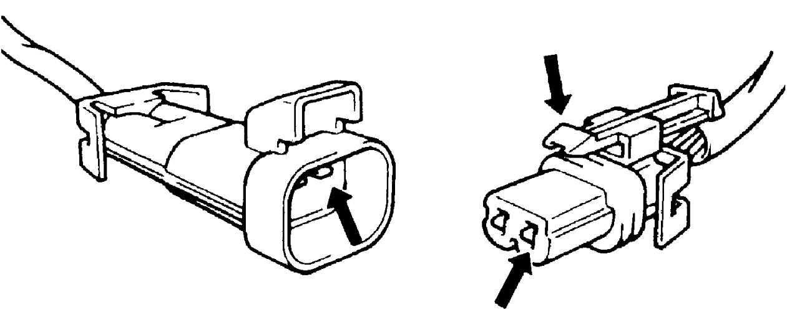
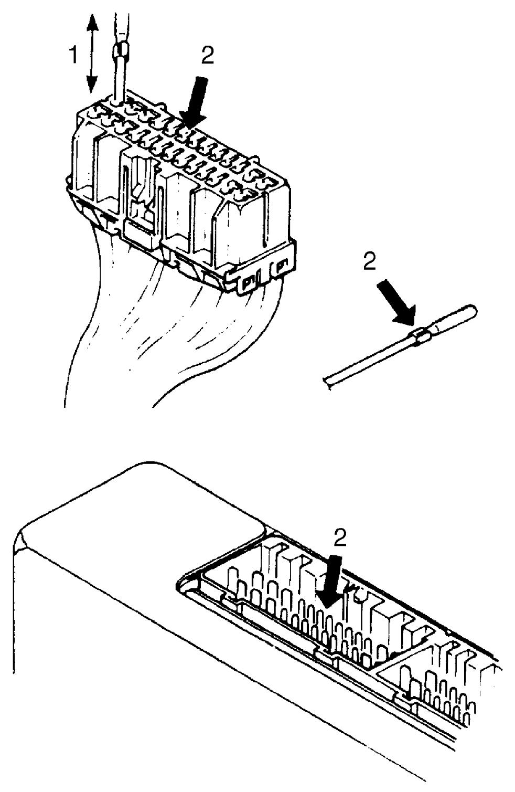
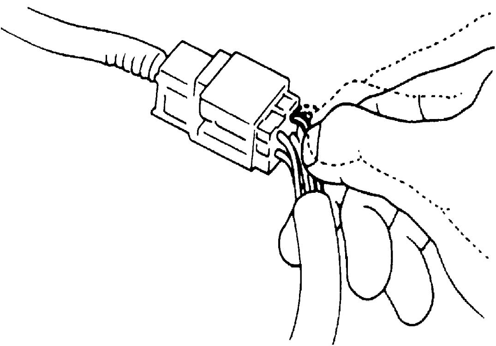
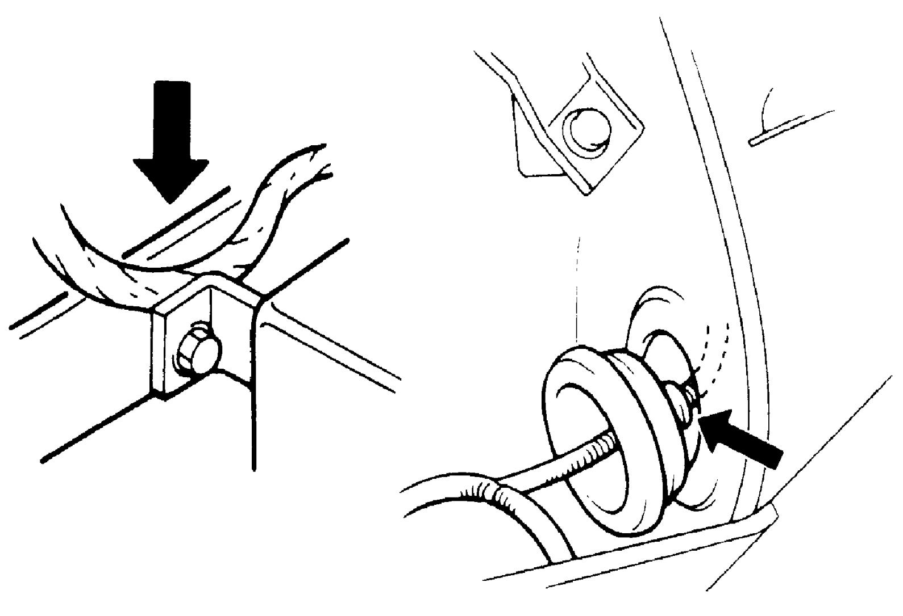

00
| Intermittent Connection and Poor Contact Inspection |
Most intermittent connections are caused by faulty electrical connections or wiring, although a sticking relay or solenoid can occasionally be a cause. When checking connections, perform check of suspect circuit for:
•Poor mating of connector halves, or terminals not fully seated in the connector body (backed out).
•Dirt or corrosion on the terminals. The terminals must be clean and free of any foreign material which could impede proper terminal contact. However, cleaning the terminal with a sand paper or the like is prohibited.
•Damaged connector body, terminals exposed to moisture and dirt, misalignment of terminals on component or connector and mating connector.
 •Improperly formed or damaged terminals.
•Improperly formed or damaged terminals.
Check each connector terminal in circuit with problem for good contact tension using a corresponding test terminal.
If contact tension is not enough, correct terminal shape to increase contact tension or replace harness.
•Poor connection of terminal and wire.
Check each wire harness in circuit with problem for poor connection by shaking it by hand lightly. If any abnormal condition is found, repair or replace harness.
•Damaged wire insulation, causing intermittent short circuit to other wiring or parts.
•Broken wire inside the insulation. If one or two strands of a multi stranded wire are intact, continuity check will show good circuit, but resistance could be too high. If the resistance is too high, repair or replace the harness.
•Dirt or corrosion on the terminals. The terminals must be clean and free of any foreign material which could impede proper terminal contact. However, cleaning the terminal with a sand paper or the like is prohibited.
•Damaged connector body, terminals exposed to moisture and dirt, misalignment of terminals on component or connector and mating connector.

 "Expand image")
Check each connector terminal in circuit with problem for good contact tension using a corresponding test terminal.
If contact tension is not enough, correct terminal shape to increase contact tension or replace harness.

 "Expand image")
| 1. | Check contact tension by inserting and removing just once. |
| 2. | Check each terminal for bend and proper alignment. |
Check each wire harness in circuit with problem for poor connection by shaking it by hand lightly. If any abnormal condition is found, repair or replace harness.

 "Expand image")
•Broken wire inside the insulation. If one or two strands of a multi stranded wire are intact, continuity check will show good circuit, but resistance could be too high. If the resistance is too high, repair or replace the harness.

 "Expand image")